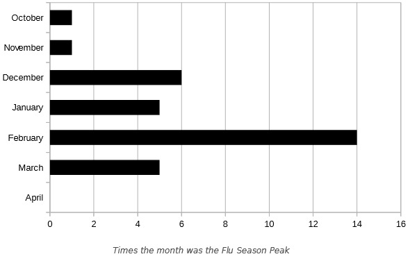

Read about the Flu and more!
In the Northern hemisphere, winter is the time for flu, but the exact timing and duration of flu seasons vary. While seasonal flu outbreaks can happen as early as October, most of the time flu activity peaks between December and February, although activity can last as late as May. The figure below shows peak flu activity for the United States by month for the 1982-83 through 2013-2014 flu seasons.
The seasonal flu vaccine protects against the influenza viruses that research indicates will be most common during the upcoming season. Traditional flu vaccines (called "trivalent" vaccines) are made to protect against three flu viruses; an influenza A (H1N1) virus, an influenza A (H3N2) virus, and an influenza B virus. In addition, there are flu vaccines made to protect against four flu viruses (called "quadrivalent" vaccines). These vaccines protect against the same three viruses as the trivalent vaccine and an additional B virus. Flu shots can be given to children 6 months and older. The Center for Disease Control recommends that you get your children vaccinated each year!